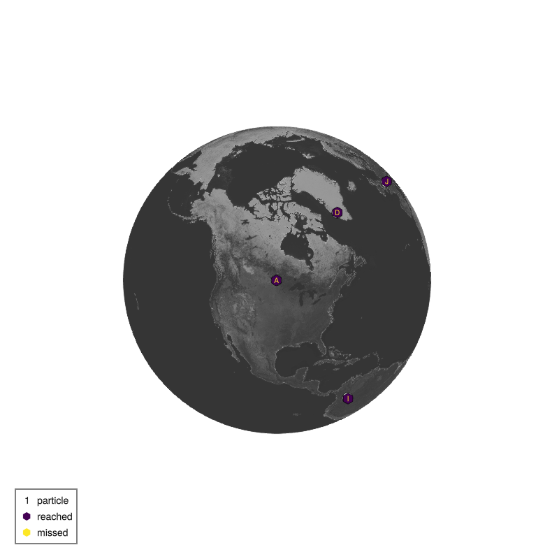
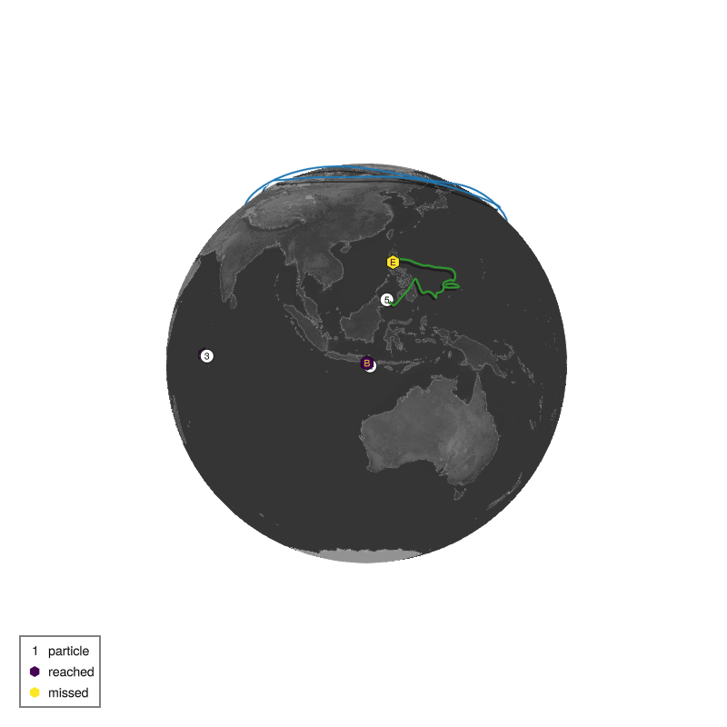
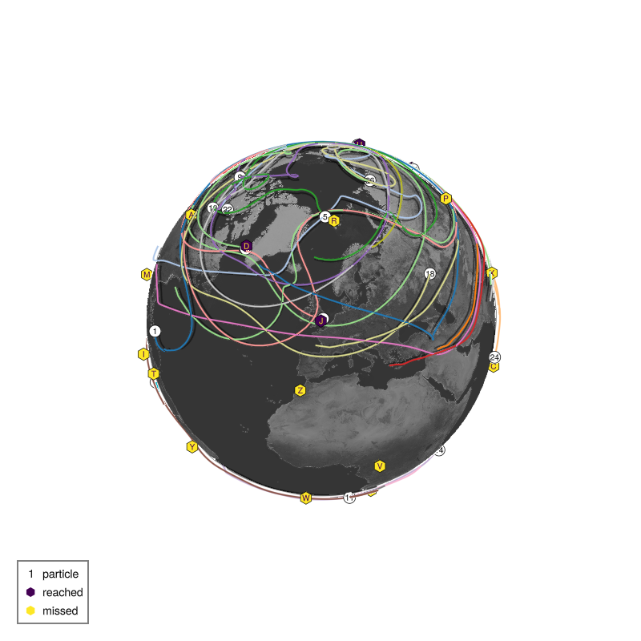
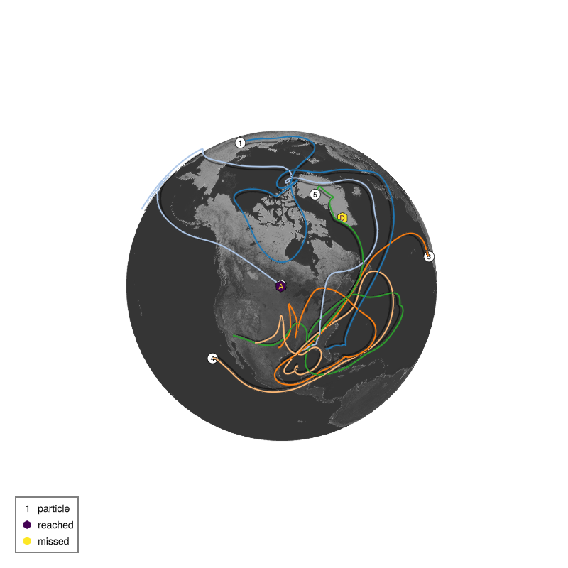
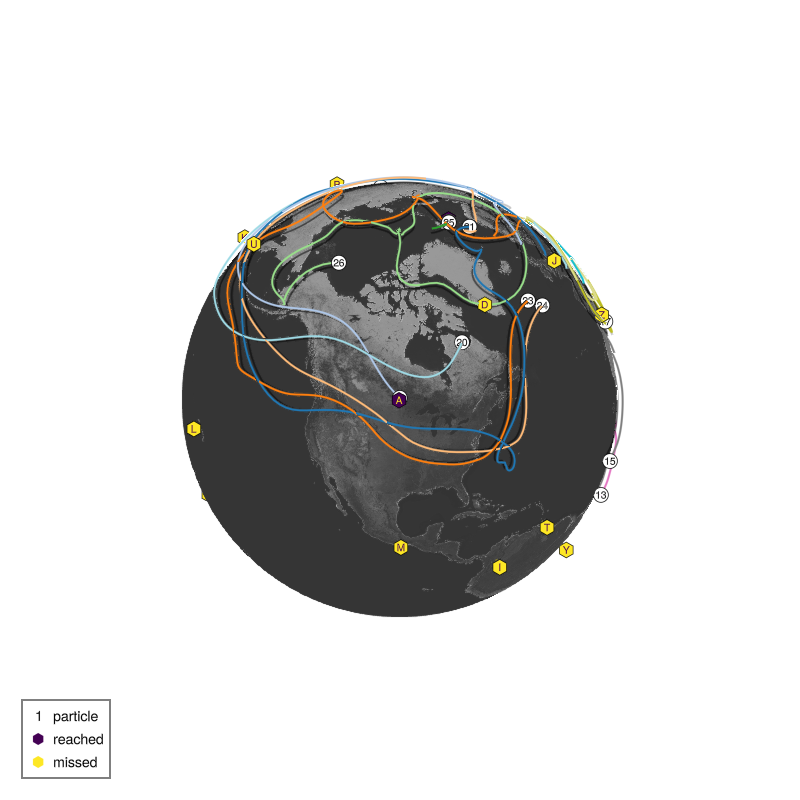

List of submissions
It follows the code and plot of the trajectories of all TravellingSailorProblem submissions to /submissions sorted in alphabetical order of the filename.
Milan: Way too close!
path: /submissions/superclose.jl
rank: 1. of 5 submissions
name = "Milan"
description = "Way too close!"
nchildren = 10 # [1, 26]
layer = 1 # [1, 8], 1 is top layer, 8 is surface layer
# Locations (lon, lat) in degrees ˚E, ˚N of the first 10 children
departures = [
( -97.1, 49.9),
( 115.0, -8.7),
( 73.5, -4.6),
( -51.7, 64.2),
( 121.0, 14.6),
( -70.7, -53.2),
( 106.8, 10.8),
( 18.5, -33.9),
( -74.1, 4.7),
( -1.3, 51.8),
]Evaluation:
Destination 1 Ana ( -97.1˚E, 49.9˚N) reached by particle 1: 0 points
Destination 2 Babu ( 115.0˚E, -8.7˚N) reached by particle 2: 0 points
Destination 3 Carla ( 73.5˚E, -4.6˚N) reached by particle 3: 0 points
Destination 4 Diego ( -51.7˚E, 64.2˚N) reached by particle 4: 0 points
Destination 5 Elif ( 121.0˚E, 14.6˚N) reached by particle 5: 0 points
Destination 6 Felipe ( -70.7˚E, -53.2˚N) reached by particle 6: 0 points
Destination 7 Gael ( 106.8˚E, 10.8˚N) reached by particle 7: 0 points
Destination 8 Haruko ( 18.5˚E, -33.9˚N) reached by particle 8: 0 points
Destination 9 Isla ( -74.1˚E, 4.7˚N) reached by particle 9: 0 points
Destination 10 Jose ( -1.3˚E, 51.8˚N) reached by particle 10: 0 points
Evaluation: 10/10 reached, 0 points
Milan: Superclose + random perturbation
path: /submissions/superclose_perturbation.jl
rank: 2. of 5 submissions
name = "Milan"
description = "Superclose + random perturbation"
nchildren = 5 # [1, 26]
layer = 5 # [1, 8], 1 is top layer, 8 is surface layer
# Locations (lon, lat) in degrees ˚E, ˚N of the first 10 children
departures = [
( -97.1, 49.9),
( 115.0, -8.7),
( 73.5, -4.6),
( -51.7, 64.2),
( 121.0, 14.6),
]
# perturb with std dev of 1 degree
σ = 1
for i in eachindex(departures)
lon, lat = departures[i]
departures[i] = (lon + σ*randn(), lat + σ*randn())
endEvaluation:
Destination 1 Ana ( -97.1˚E, 49.9˚N) missed by particle 1: -1140 points
Destination 2 Babu ( 115.0˚E, -8.7˚N) reached by particle 2: 146 points
Destination 3 Carla ( 73.5˚E, -4.6˚N) reached by particle 3: 0 points
Destination 4 Diego ( -51.7˚E, 64.2˚N) reached by particle 4: 0 points
Destination 5 Elif ( 121.0˚E, 14.6˚N) missed by particle 5: -1532 points
Evaluation: 3/5 reached, -2526 points
Milan: All 26 random
path: /submissions/all_random.jl
rank: 3. of 5 submissions
name = "Milan"
description = "All 26 random"
nchildren = 26 # [1, 26]
layer = 7 # [1, 8], 1 is top layer, 8 is surface layer
# 26 random locations (lon, lat) in degrees ˚E, ˚N
departures = [
(322.34, 62.20),
(100.16, -51.68),
( 44.30, -27.89),
(105.32, -19.22),
(354.02, 68.25),
( 79.60, 28.18),
( 21.45, 37.36),
(270.17, 47.94),
( 99.39, 20.99),
(186.29, -55.38),
(270.93, -2.89),
(346.22, -65.58),
(272.65, 32.82),
(174.54, -51.99),
(358.22, -32.65),
( 73.29, 27.31),
( 35.74, 67.60),
(356.70, 45.61),
(238.86, -10.03),
( 94.67, -19.18),
( 94.02, -46.96),
(256.61, 24.72),
( 39.68, 34.94),
( 87.61, 9.33),
( 77.99, -26.93),
(292.05, 40.39),
]Evaluation:
Destination 1 Ana ( -97.1˚E, 49.9˚N) missed by particle 18: -1570 points
Destination 2 Babu ( 115.0˚E, -8.7˚N) missed by particle 20: -1363 points
Destination 3 Carla ( 73.5˚E, -4.6˚N) missed by particle 24: -17621 points
Destination 4 Diego ( -51.7˚E, 64.2˚N) reached by particle 6: 18718 points
Destination 5 Elif ( 121.0˚E, 14.6˚N) missed by particle 24: -2912 points
Destination 6 Felipe ( -70.7˚E, -53.2˚N) reached by particle 3: 22281 points
Destination 7 Gael ( 106.8˚E, 10.8˚N) missed by particle 24: -3128 points
Destination 8 Haruko ( 18.5˚E, -33.9˚N) missed by particle 14: -2751 points
Destination 9 Isla ( -74.1˚E, 4.7˚N) missed by particle 11: -8885 points
Destination 10 Jose ( -1.3˚E, 51.8˚N) reached by particle 8: 37018 points
Destination 11 Karim ( 139.7˚E, 35.7˚N) reached by particle 23: 9557 points
Destination 12 Lola (-157.8˚E, 21.3˚N) missed by particle 13: -8817 points
Destination 13 Maeve ( -96.7˚E, 17.1˚N) missed by particle 22: -9400 points
Destination 14 Noah ( 115.9˚E, -31.9˚N) missed by particle 25: -2381 points
Destination 15 Omar ( 166.7˚E, -77.8˚N) missed by particle 21: -1205 points
Destination 16 Priya ( 106.9˚E, 47.9˚N) missed by particle 1: -1940 points
Destination 17 Quirin ( 151.2˚E, -33.9˚N) missed by particle 25: -1253 points
Destination 18 Rasmus ( 15.6˚E, 78.2˚N) missed by particle 5: -2984 points
Destination 19 Saanvi (-169.9˚E, -21.2˚N) missed by particle 25: -7388 points
Destination 20 Tomas ( -61.5˚E, 10.5˚N) missed by particle 1: -12895 points
Destination 21 Uma ( 158.7˚E, 53.0˚N) reached by particle 17: 6341 points
Destination 22 Vera ( 15.3˚E, 4.4˚N) missed by particle 11: -27595 points
Destination 23 Walter ( -5.9˚E, -15.9˚N) missed by particle 11: -3449 points
Destination 24 Xia ( 85.3˚E, 27.7˚N) missed by particle 6: -2173 points
Destination 25 Yuki ( -47.9˚E, -15.8˚N) missed by particle 11: -5815 points
Destination 26 Zara ( -7.6˚E, 33.6˚N) missed by particle 18: -10645 points
Evaluation: 5/26 reached, -42255 points
Flying Dutchman and the Ghost: Five on the Interstate 10
path: /submissions/flying_dutchghost.jl
rank: 4. of 5 submissions
name = "Flying Dutchman and the Ghost"
description = "Five on the Interstate 10"
nchildren = 5
layer = 8
departures = [
( -82, 30), # (lon, lat) in degrees for particle 1
( -90, 31), # particle 2
( -98, 32), # etc
(-106, 33),
(-114, 34),
]
Evaluation:
Destination 1 Ana ( -97.1˚E, 49.9˚N) reached by particle 2: 31633 points
Destination 2 Babu ( 115.0˚E, -8.7˚N) missed by particle 2: -50434 points
Destination 3 Carla ( 73.5˚E, -4.6˚N) missed by particle 2: -80375 points
Destination 4 Diego ( -51.7˚E, 64.2˚N) missed by particle 5: -1250 points
Destination 5 Elif ( 121.0˚E, 14.6˚N) missed by particle 2: -26118 points
Evaluation: 1/5 reached, -126544 points
Sir Francis Drake: Prime Meridian Party
path: /submissions/prime_meridian.jl
rank: 5. of 5 submissions
name = "Sir Francis Drake"
description = "Prime Meridian Party"
nchildren = 26
layer = 8
# like list comprehension in Python
departures = [(0, lat) for lat in range(-90, 90, length=26)]
Evaluation:
Destination 1 Ana ( -97.1˚E, 49.9˚N) reached by particle 22: 22780 points
Destination 2 Babu ( 115.0˚E, -8.7˚N) missed by particle 9: -23445 points
Destination 3 Carla ( 73.5˚E, -4.6˚N) missed by particle 9: -6017 points
Destination 4 Diego ( -51.7˚E, 64.2˚N) missed by particle 26: -1018 points
Destination 5 Elif ( 121.0˚E, 14.6˚N) missed by particle 20: -32710 points
Destination 6 Felipe ( -70.7˚E, -53.2˚N) missed by particle 6: -3341 points
Destination 7 Gael ( 106.8˚E, 10.8˚N) missed by particle 20: -31276 points
Destination 8 Haruko ( 18.5˚E, -33.9˚N) missed by particle 9: -1803 points
Destination 9 Isla ( -74.1˚E, 4.7˚N) missed by particle 21: -28994 points
Destination 10 Jose ( -1.3˚E, 51.8˚N) missed by particle 21: -2597 points
Destination 11 Karim ( 139.7˚E, 35.7˚N) missed by particle 20: -8334 points
Destination 12 Lola (-157.8˚E, 21.3˚N) missed by particle 23: -24794 points
Destination 13 Maeve ( -96.7˚E, 17.1˚N) missed by particle 23: -22924 points
Destination 14 Noah ( 115.9˚E, -31.9˚N) reached by particle 11: 12701 points
Destination 15 Omar ( 166.7˚E, -77.8˚N) reached by particle 3: 15854 points
Destination 16 Priya ( 106.9˚E, 47.9˚N) missed by particle 21: -2797 points
Destination 17 Quirin ( 151.2˚E, -33.9˚N) missed by particle 8: -18763 points
Destination 18 Rasmus ( 15.6˚E, 78.2˚N) reached by particle 25: 544 points
Destination 19 Saanvi (-169.9˚E, -21.2˚N) missed by particle 2: -32876 points
Destination 20 Tomas ( -61.5˚E, 10.5˚N) missed by particle 21: -23287 points
Destination 21 Uma ( 158.7˚E, 53.0˚N) missed by particle 23: -1335 points
Destination 22 Vera ( 15.3˚E, 4.4˚N) reached by particle 14: 2285 points
Destination 23 Walter ( -5.9˚E, -15.9˚N) missed by particle 11: -6696 points
Destination 24 Xia ( 85.3˚E, 27.7˚N) missed by particle 18: -8928 points
Destination 25 Yuki ( -47.9˚E, -15.8˚N) missed by particle 13: -19445 points
Destination 26 Zara ( -7.6˚E, 33.6˚N) missed by particle 17: -1435 points
Evaluation: 5/26 reached, -248651 points